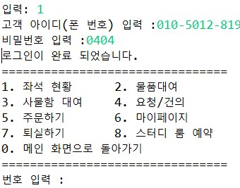
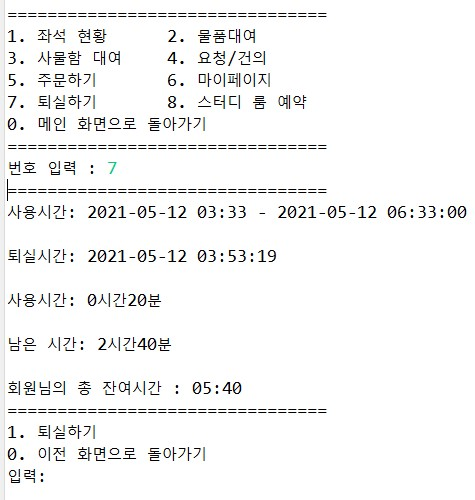
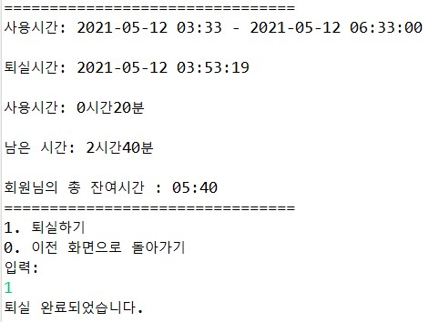

Sujeong's Portfolio
Sujeong's Portfolio
Sujeong's Portfolio
Sujeong's Portfolio

2021. 05. 24 ~ 2021. 06. 08 (5일간) / 4명
Windows 10, Oracle Database 11g, SQLdeveloper



BufferedReader, Writer(new FileReader, Writer( "path" ))을 사용해 사용자에게 데이터(ID,PW)를 입력받고 ArrayList <'T'>, HashMap<'T'>로 회원으로 저장되어 있는 DB와 입력받은 데이터가 일치한지 확인하는 메서드로 로그인 기능을 구현했다.
NEXT로그인 한 사용자 정보를 입력받아 데이터를 DB와 비교한 후 Calendar 클래스와 getTimeInMillis()로 사용자가 입실한 일시와 퇴실을 원하는 일시를 날짜 계산 하였고, 계산된 시간을 통해 사용자가 추가금 또는 남은 시간 적립의 양을 연산하도록 구현했다.
NEXT연산된 사용자의 이용 시간을 ArrayList()로 다시 DB에 저장하고 사용자의 상태를 로그아웃 상태로 변환하여 저장하게 메소드를 구현했다.